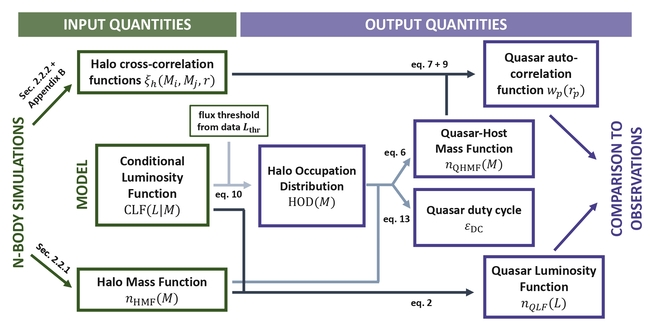
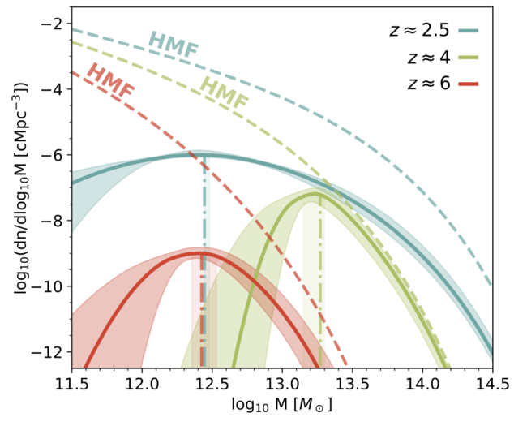
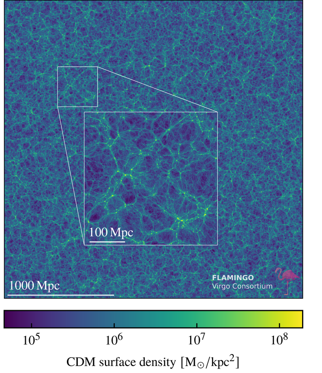
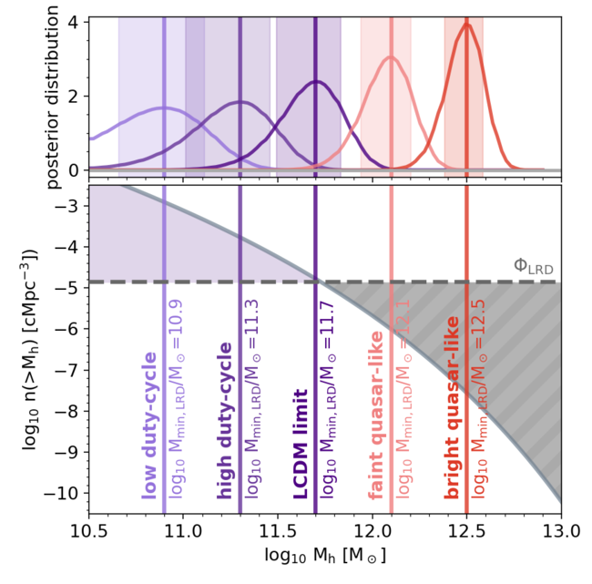
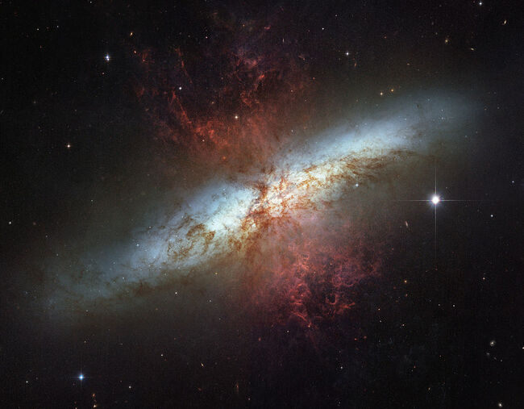
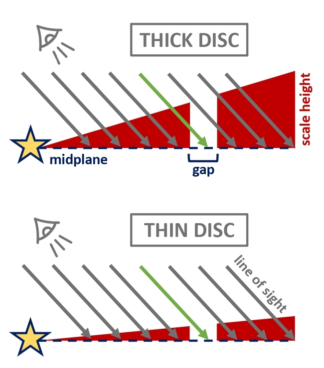
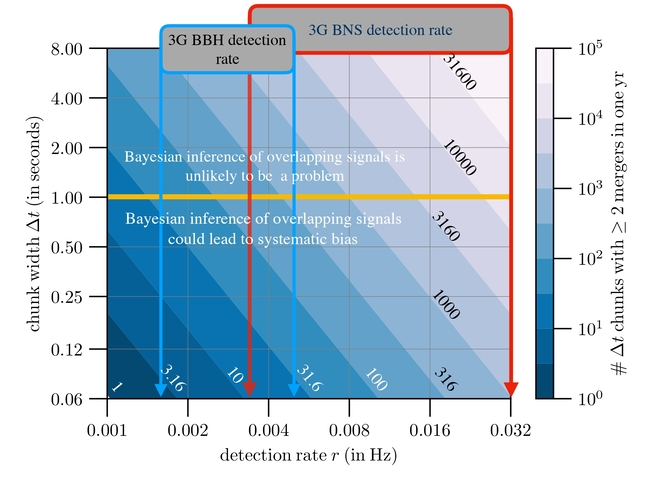

<div class="prose">

	<article>

		<p class="lead">
			I work at the intersection of theoretical and observational astrophysics, bridging models
			with data by interpreting observations within the framework of theoretical predictions,
			using both analytical and numerical methods.
		</p>
		<!-- Add something about Bayesian methods, inference, ML, etc -->

				<p>
			The central thread of my research is understanding <b>high-redshift quasars</b> and the
			<b>formation and growth of supermassive black holes</b> across cosmic time. My approach combines
			<b>large-volume cosmological simulations</b> with <b>empirical models</b> for quasars and their host
			halos, and confronts them with quasar observations &mdash; in particular <b>clustering measurements</b>
			from JWST and wide-field surveys. With these tools I address questions such as: <i>Where does quasar
			activity take place? How do the properties of quasars relate to those of their host halos and galaxies?
			What is the timescale of quasar activity, and how does it shape the growth of supermassive black
			holes?</i>
		</p>

		<p>
			Within this theme, I have built <a href="#clustering">population models for quasar clustering</a>,
			interpreted <a href="#jwst_clustering">clustering measurements from JWST</a>, studied
			<a href="#simulations">massive black holes in hydrodynamical simulations</a>, and explored the
			enigmatic JWST population of <a href="#lrd">&ldquo;little red dots&rdquo;</a>.
		</p>

		<p>
			I am also interested in the broader physics of galaxy formation and cosmology, and I have worked on several
			other topics, including models of <a href="#outflows">galactic outflows</a> and extended [CII]
			halos, the morphology of <a href="#discs">protoplanetary discs</a>, and parameter inference for
			<a href="#grav_waves">gravitational-wave signals</a>.
		</p>

		<h2 class="research-group">High-redshift quasars and supermassive black holes</h2>

		<section id="clustering">
			<header>
				<h2>Quasar clustering and population models from z&#8776;4 to z&#8776;6</h2>
			</header>

			<div class="research-figure"></div>

			<div class="research-text">
				Quasar clustering measurements are a powerful probe of the physical processes governing the
				<b>growth of supermassive black holes</b> and their coevolution with host galaxies. Wide-field
				surveys reveal a dramatic increase in the <b>clustering strength of quasars</b> at high redshift,
				with measurements at \(z\approx4\) that have been challenging to reproduce theoretically &mdash;
				even assuming quasars are hosted by the most massive dark matter halos in the early Universe.

				In the first project of my Ph.D., we revisited this decade-long problem using new,
				<b>large-volume N-body cosmological simulations</b>. We developed a model that reproduces the
				observed quasar clustering and demographics through a <b>novel method</b> for computing the halo
				mass function and halo cross-correlation functions across <b>multiple simulations</b>. Using a
				conditional luminosity function framework, the model captures the <b>stochastic relationship</b>
				between quasar luminosity and halo mass and predicts key observables &mdash; the quasar
				auto-correlation and luminosity functions, host mass function, and duty cycle.

				I then extended this framework to the highest redshifts probed by JWST. Using
				<b>NIRCam/WFSS observations</b> from surveys such as EIGER and ASPIRE &mdash; which detected
				numerous [OIII]-emitting galaxies around bright high-z quasars and measured the
				<b>quasar&ndash;galaxy cross-correlation function</b> for the first time at \(z>6\) &mdash; we
				proposed a framework to <b>jointly infer the properties of quasars and [OIII]-emitting
				galaxies</b> from their clustering and luminosity functions. Applied to EIGER data, it constrains
				the luminosity&ndash;halo mass relation, the host halo mass function, and the duty
				cycle/occupation fraction of quasars and galaxies at \(z\approx6\), and will be applied to
				upcoming JWST surveys.
			</div>

			<div class="relevant-pubs">
				<h4>Relevant publications</h4>
				<ul>
					<li><a href="https://doi.org/10.1093/mnras/stae329">Pizzati et al. 2024a</a> &mdash;
						<i>Revisiting the extreme clustering of \(z\approx4\) quasars with large volume cosmological simulations</i></li>
					<li><a href="https://doi.org/10.1093/mnras/stae2307">Pizzati et al. 2024b</a> &mdash;
						<i>A unified model for the clustering of quasars and galaxies at \(z\approx6\)</i></li>
				</ul>
			</div>
		</section>

		<section id="jwst_clustering">
			<header>
				<h2>JWST clustering measurements of quasars and their environments</h2>
			</header>

			<div class="research-figure"></div>

			<div class="research-text">
				JWST's <b>NIRCam Wide Field Slitless Spectroscopy (WFSS)</b> mode has, for the first time,
				enabled spectroscopic <b>clustering measurements</b> of quasars and galaxies deep into the Epoch
				of Reionization. Surveys such as <b>EIGER</b> and <b>ASPIRE</b> target bright high-z quasar fields
				and detect the [OIII]-emitting galaxies around them, revealing a wide range of large-scale
				environments &mdash; from sparse fields to spectacular overdensities.

				I have contributed to several of these measurement campaigns, which deliver the
				<b>quasar&ndash;galaxy cross-correlation function</b>, the galaxy auto-correlation function, and
				constraints on <b>host halo masses and duty cycles</b> at \(z\approx6\). Interpreting these data
				with population models (see above) is key to understanding where early quasars live and how they
				grow. Robust inference also requires careful treatment of systematics such as <b>cosmic
				variance</b> and the contribution of <b>satellites</b> in the small volumes probed by JWST.
			</div>

			<div class="relevant-pubs">
				<h4>Relevant publications</h4>
				<ul>
					<li><a href="https://doi.org/10.3847/1538-4357/ad778b">Eilers et al. 2024</a> &mdash;
						<i>EIGER VI. The Correlation Function, Host Halo Mass and Duty Cycle of Luminous Quasars at \(z\approx6\)</i></li>
					<li><a href="https://arxiv.org/abs/2602.04974">Huang et al. 2026a</a> &mdash;
						<i>Clustering of \(z\sim6.6\) Quasars and [O III] Emitters Constrains Host Halo Masses and Duty Cycles in 25 ASPIRE Fields</i></li>
					<li><a href="https://arxiv.org/abs/2605.11077">Huang et al. 2026b</a> &mdash;
						<i>The Impact of Cosmic Variance and Satellites on JWST Clustering Measurements at Redshift around 6</i></li>
				</ul>
			</div>
		</section>

		<section id="simulations">
			<header>
				<h2>Massive black holes and quasars in cosmological hydrodynamical simulations</h2>
			</header>

			<div class="research-figure">
				
				<span class="fig-credit">Image: Schaye et al. 2023</span>
			</div>

			<div class="research-text">
				<b>Cosmological hydrodynamical simulations</b> follow the non-linear evolution of cosmic
				structure by modeling the many processes important to the physics of galaxies, stars, and black
				holes, and have become capable of reproducing a wide range of observed galaxy properties. Yet,
				while much effort has gone into the connection between SMBHs and their host galaxies through gas
				fueling and AGN feedback, only a few studies have focused on the <b>global properties of
				SMBHs</b> and their evolution over cosmic time. SMBHs are visible at cosmological distances when
				they shine as <b>bright quasars</b> &mdash; rare objects whose statistical properties can only be
				captured theoretically with large simulated volumes.

				In a project I co-supervise, we use <b>state-of-the-art, large-volume cosmological
				hydrodynamical simulations</b> &mdash; among the largest ever run &mdash; to reproduce two basic
				probes of quasar activity: the <b>quasar luminosity function</b> and the <b>quasar
				auto-correlation function</b>. We study how well these simulations match observational
				constraints across redshift, and investigate which black holes contribute to the bright quasar
				population. For the first time, this lets us test the ability of large-volume hydrodynamical
				simulations to capture the evolution of massive black holes and quasar activity across cosmic
				time.
			</div>

			<div class="relevant-pubs">
				<h4>Relevant publications</h4>
				<ul>
					<li><a href="https://doi.org/10.1093/mnras/stag308">Ding et al. 2026</a> &mdash;
						<i>The luminosity function and clustering of bright quasars in cosmological simulations</i></li>
				</ul>
			</div>
		</section>

		<section id="lrd">
			<header>
				<h2>The enigmatic properties of the JWST little red dots</h2>
			</header>

			<div class="research-figure"></div>

			<div class="research-text">
				The dramatic leap in sensitivity brought by JWST has led to unexpected discoveries, such as an
				abundant population of <b>broad-line high-z AGN</b> appearing as &ldquo;little red dots&rdquo;
				(LRDs) in JWST imaging. When corrected for obscuration, these LRDs have surprisingly
				<b>large bolometric luminosities</b>, comparable to UV-selected quasars studied for decades.
				This is remarkable: UV-luminous quasars are selected from wide-field \(1400\,\mathrm{deg}^2\)
				surveys, whereas JWST AGN are found in fields of no more than \(\sim300\text{--}600\,
				\mathrm{arcmin}^2\) &mdash; implying these AGN are <b>far more abundant</b> than comparably
				luminous unobscured quasars, and that our picture of <b>SMBH growth</b> in the early Universe
				needs revision.

				By comparing JWST AGN/LRDs to UV-selected quasars, we found that <b>LRDs outnumber quasars</b>
				by a large, rapidly redshift-evolving factor. This suggests the LRD population cannot be
				accommodated in the same halos as unobscured quasars, and that LRDs may represent a
				<b>different evolutionary phase</b> of early SMBHs &mdash; a hypothesis to be tested by
				constraining LRD clustering, for which we developed a successful <b>mock analysis</b> based on a
				quasar population model.
			</div>

			<div class="relevant-pubs">
				<h4>Relevant publications</h4>
				<ul>
					<li><a href="https://doi.org/10.1093/mnras/staf660">Pizzati et al. 2025</a> &mdash;
						<i>&ldquo;Little Red Dots&rdquo; cannot reside in the same dark matter halos as comparably luminous unobscured quasars</i></li>
				</ul>
			</div>
		</section>

		<h2 class="research-group">Other research topics</h2>

		<section id="outflows">
			<header>
				<h2>Modeling outflows and [CII] halos in high-redshift galaxies</h2>
			</header>

			<div class="research-figure">
				
				<span class="fig-credit">Image: NASA</span>
			</div>

			<div class="research-text">
				Investigating the environments of galaxies during the Epoch of Reionization is a pressing goal
				of modern astrophysics. Telescopes such as ALMA and NOEMA have opened a new window on the
				primordial Universe, revealing obscured star formation and ISM line emission at rest-frame FIR
				wavelengths up to \(z\sim7\). One of ALMA's most compelling findings is that a significant
				fraction of \(z>4\) galaxies is surrounded by <b>extended (10&ndash;15 kpc) [C II]-emitting
				haloes</b> not predicted even by advanced zoom-in simulations.

				As part of my Master's thesis, I worked with Andrea Ferrara, Andrea Pallottini, and the
				cosmology group at SNS on a plausible formation mechanism, focusing on the hypothesis that these
				halos are remnants of past or ongoing <b>outflow activity</b>. Using a semi-analytical model for
				an outflow undergoing <b>catastrophic cooling</b> in the inner halo, we computed the abundance of
				singly ionized carbon and the resulting [C II] emission, and compared with data from the ALMA
				ALPINE program. We concluded that outflows are a <b>promising explanation</b> for the observed
				[C II] halos, pointing to <b>star-formation-driven feedback</b> already in place well into the
				Epoch of Reionization.
			</div>

			<div class="relevant-pubs">
				<h4>Relevant publications</h4>
				<ul>
					<li><a href="https://doi.org/10.1093/mnras/staa1163">Pizzati et al. 2020</a> &mdash;
						<i>Outflows and extended [CII] haloes in high-redshift galaxies</i></li>
					<li><a href="https://doi.org/10.1093/mnras/stac3816">Pizzati et al. 2023</a> &mdash;
						<i>[CII] Haloes in ALPINE galaxies: smoking-gun of galactic outflows?</i></li>
				</ul>
			</div>
		</section>

		<section id="discs">
			<header>
				<h2>Turbulence and morphology of protoplanetary discs</h2>
			</header>

			<div class="research-figure"></div>

			<div class="research-text">
				Constraining the strength of <b>gas turbulence</b> in protoplanetary discs is crucial for
				understanding gas accretion and planet formation. A promising probe is the <b>vertical scale
				height</b> of the dust, which is coupled to the gas &mdash; now measurable thanks to the very
				<b>high-resolution observations</b> of ALMA, which reveal <b>dark gaps and emission rings</b> in
				disc images. As shown by <i>Pinte et al. 2016</i>, these features can be exploited to recover the
				<b>3-D morphology of discs</b>: due to <b>projection effects</b>, a gap is partly filled by
				emission from neighbouring regions &mdash; more so along the minor axis than the major axis &mdash;
				so the <b>gap contrast</b> between the two axes traces the disc's vertical structure.

				With Giovanni Rosotti and Beno&icirc;t Tabone, we applied this method to high-resolution
				<b>DSHARP observations</b>, building a radiative transfer model to reproduce the observed gap
				contrast for different dust scale heights. The best-fitting scale heights are generally small,
				implying <b>low levels of gas turbulence</b> &mdash; an important step toward understanding the
				physics that governs planet formation.
			</div>

			<div class="relevant-pubs">
				<h4>Relevant publications</h4>
				<ul>
					<li><a href="https://doi.org/10.1093/mnras/stad2057">Pizzati et al. 2023</a> &mdash;
						<i>Constraining turbulence in protoplanetary discs using the gap contrast: an application to the DSHARP sample</i></li>
				</ul>
			</div>
		</section>

		<section id="grav_waves">
			<header>
				<h2>Overlapping gravitational-wave signals in next-generation detectors</h2>
			</header>

			<div class="research-figure"></div>

			<div class="research-text">
				With the first direct detection of gravitational waves in 2015, the era of
				<b>gravitational-wave astronomy</b> began, already delivering a wealth of information about
				compact binary mergers of neutron stars and black holes. The <b>next generation of detectors</b>
				&mdash; Cosmic Explorer and the Einstein Telescope &mdash; is expected to observe hundreds of
				thousands of binary coalescences per year. With these leaps in sensitivity come new challenges:
				signals will be so frequent that they begin to <b>overlap in the time domain</b>, where standard
				data-analysis pipelines are not guaranteed to work and may yield <b>biased parameter
				estimates</b>.

				With Bangalore Sathyaprakash, Surabhi Sachdev, and Anuradha Gupta, we quantified the biases that
				arise when current inference pipelines are used in the presence of multiple overlapping signals.
				We showed that, by setting a prior on the coalescence time, the properties of overlapping signals
				can be recovered correctly with existing infrastructure &mdash; provided the coalescence times
				are more than \(\sim1\text{--}2\) seconds apart. Signals within \(\sim0.5\) seconds of each
				other, however, suffer significant biases, motivating new strategies and algorithms.
			</div>

			<div class="relevant-pubs">
				<h4>Relevant publications</h4>
				<ul>
					<li><a href="https://doi.org/10.1103/PhysRevD.105.104016">Pizzati et al. 2022</a> &mdash;
						<i>Toward inference of overlapping gravitational-wave signals</i></li>
				</ul>
			</div>
		</section>

	</article>

</div>
